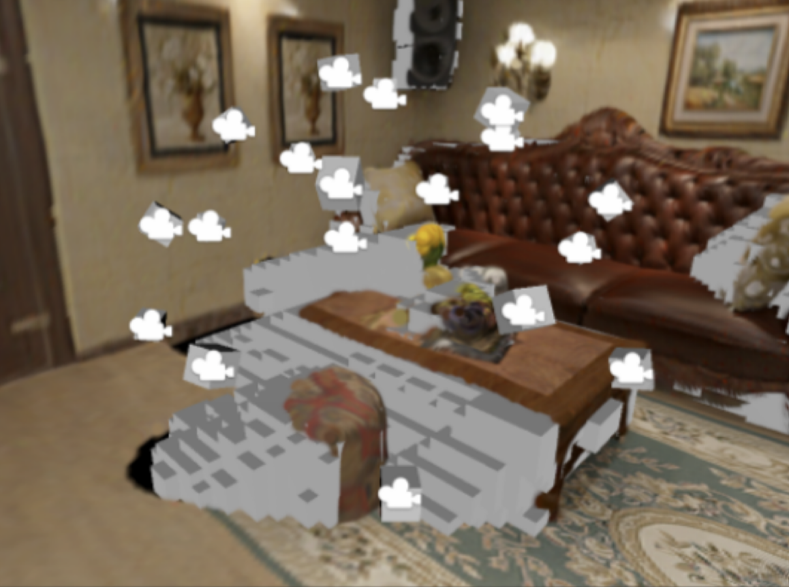
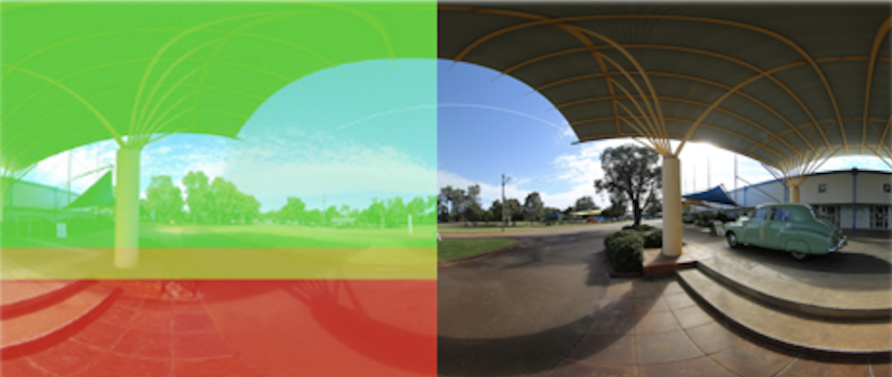

OmniDreamer: Disocclusion-Aware Dynamic View Sampling for Panoramic 3D Scene Completion
A. Agrawal, S. N. Sinha, F. Rücker
European Conference on Computer Vision (ECCV) TwinWorld, 2026
I am an ELIZA master's student at the Technical University of Darmstadt, where I am part of the 3D Graphics & Vision group led by Prof. Dr. Justus Thies. I received my B.S. in Computer Science from Purdue University, where I was fortunate to work with Prof. Voicu Popescu on topics in mixed reality and computer graphics. Between my studies, I was awarded a Fulbright U.S. Student Program grant to complete a project on single-view 3D scene reconstruction at the Fraunhofer Institute for Computer Graphics Research (IGD).
My research focuses on reconstructing dynamic, interactive 3D/4D environments, with an emphasis on human-scene interaction and temporally consistent representations.
Outside of research, I spend most of my time outdoors. My favorite activities include traveling, hiking, rock climbing, scuba diving, surfing, caving, snowboarding (ok, pretty much any adventure sport), and of course, photography!


A. Agrawal, S. N. Sinha, F. Rücker
European Conference on Computer Vision (ECCV) TwinWorld, 2026
